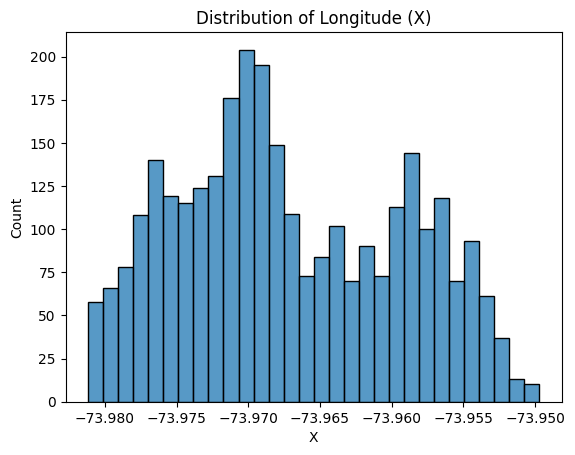
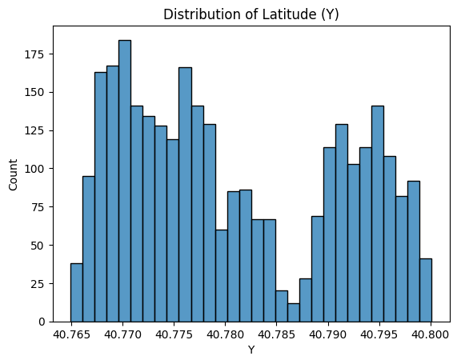
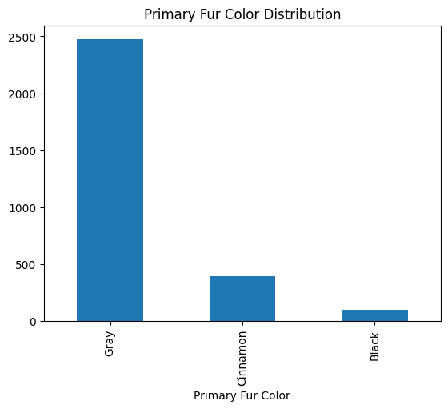
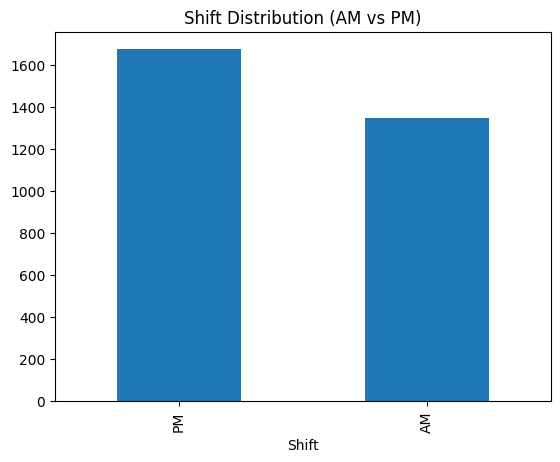
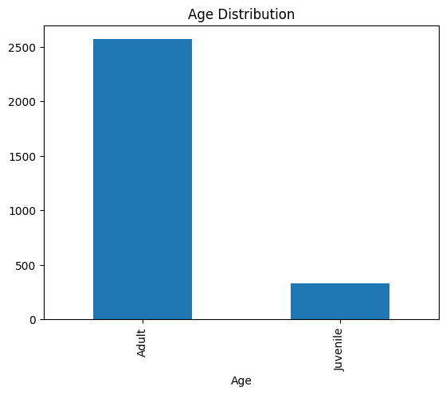
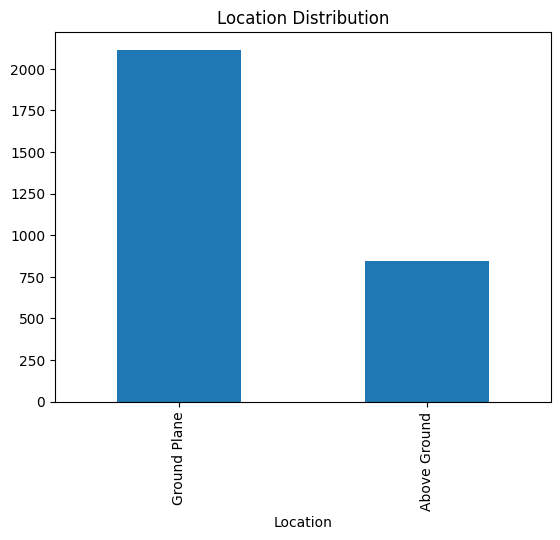
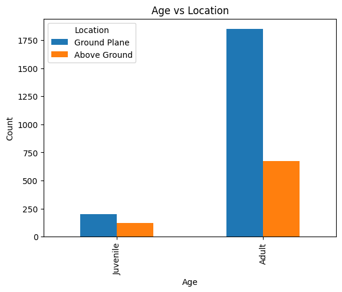
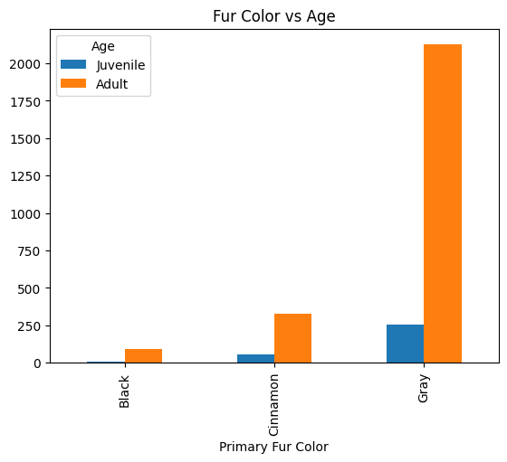

This data comes from The Squirrel Census , a multimedia science project documenting Eastern gray squirrels in Central Park.
The dataset contains 3,023 squirrel sightings including geographic coordinates, age, fur color, elevation (ground vs above ground), and time of observation (AM/PM shift).
Potential Biases: Data was collected only in Central Park, during specific time shifts, and by human observers — meaning some behaviors or squirrel types may be underreported.







